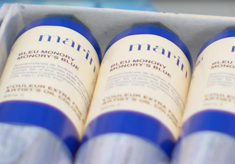

Pourquoi Monory utilise du bleu ?
Jacques Monory représente le monde, sa vie, ses rencontres et ses voyages tels qu'il les voit, avec toute leur cruauté, mais toujours protégé derrière un filtre de couleur bleu. C'est aussi derrière un filtre bleu que l'on projetait certains films, autrefois, à la campagne. Ce bleu représente la couleur du rêve, la nuit américaine, il constitue un écran pare-balle. Le bleu des rêves, celui qui permet de filtrer la cruauté du monde.
